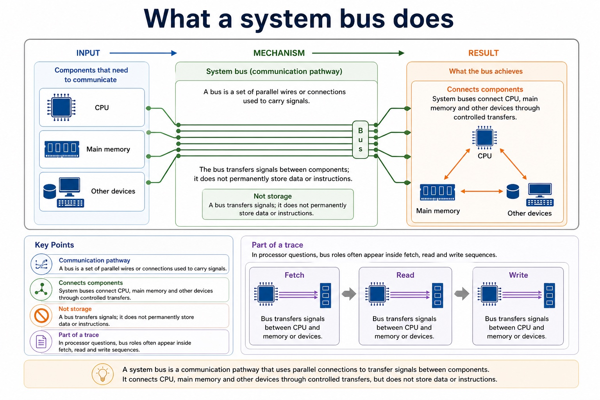
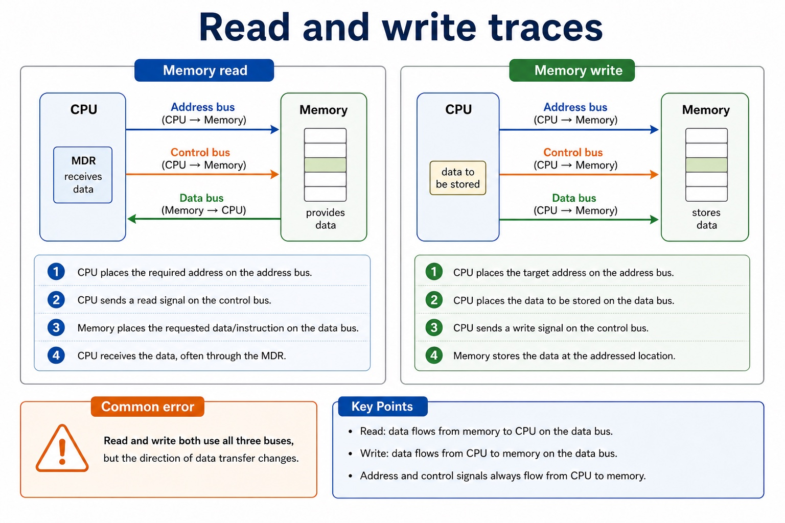

The address bus carries the address of the memory or I/O location being accessed and is normally directed from the processor. The data bus carries data and instructions in either direction. The control bus carries control and timing signals in both directions overall, including read/write signals from the CPU and interrupt or status signals toward it.
A memory read uses all three buses: the CPU places the required address on the address bus, sends a read signal on the control bus, and memory returns the requested data or instruction on the data bus. A bus transfers signals; it does not permanently store them.
USB is a general serial interface carrying digital data and often power for peripherals. HDMI carries digital video and audio. VGA carries analogue video and does not carry audio in the standard VGA signal. Port choice must match the peripheral and signal rather than rely on a claim that one connector is always best.
Worked example: Read memory, then connect a display
To read address 240, the CPU puts 240 on the address bus and read on the control bus; memory returns the contents on the data bus. To connect the computer to a modern TV with one digital audio/video cable, choose HDMI. A keyboard or removable drive commonly uses USB, while a legacy analogue display may use VGA.
Core syllabus practice
System buses and peripheral ports: apply and assess
Targeted practice
1. Which bus carries an address, which carries a value, and which carries read/write signals?
Show answer
Address bus; data bus; control bus.
2. Complete a trace table for a memory read using the three buses.
Show answer
Address on address bus, read signal on control bus, requested data/instruction from memory on data bus.
3. Which port commonly carries both digital video and audio?
Show answer
HDMI.
4. Which named port carries analogue video?
Show answer
VGA.
5. Give one USB use or facility.
Show answer
A digital peripheral connection such as keyboard/storage, often also supplying electrical power.
Exam-style question
6 marks
Describe a memory read using the address, data and control buses, then choose USB, HDMI or VGA for one stated peripheral connection.
Show MS
Answer
Guidance
Marks
address bus carries the required memory/I/O address
Do not swap the address and data buses or claim that VGA normally carries digital audio.
1
control bus carries the read signal
1
data bus returns the requested data/instruction
1
USB matched to a suitable digital peripheral/data/power use
1
HDMI matched to digital video and audio
1
VGA matched to analogue video without standard audio
Buses move signals. They are not tiny school buses full of bytes wearing backpacks.
A system bus is a communication pathway used to transfer signals between
the CPU, memory and other components. The address bus says where, the
data bus carries what, and the control bus says what operation is happening.
Describethe roles of address, data and control buses
Traceread and write operations using the correct bus
Explainhow address bus width affects addressable memory locations
Cambridge marking often rewards the bus name only when the role is also accurate.
Common error
"The bus transfers data" is not enough if the question asks for three buses. Distinguish each pathway.
Warm-up hook
The CPU wants to read memory address 500. Which bus carries 500?
Click the best answer. Address 500 is a location, not the value hiding inside that location.
Click one. Ask: is 500 a location, a value, or a command?
Knowledge point 1
What a system bus does
Communication pathwayA bus is a set of parallel wires or connections used to carry signals.Connects componentsSystem buses connect CPU, main memory and other devices through controlled transfers.Not storageA bus transfers signals; it does not permanently store data or instructions.Part of a traceIn processor questions, bus roles often appear inside fetch, read and write sequences.
Chinese support: bus = 总线；address = 地址/位置；data = 数据/值；control signal = 控制信号；bidirectional = 双向。
What a system bus does

What a system bus does: source-grounded visual explanation.
Lesson fact: Communication pathway
Lesson fact: A bus is a set of parallel wires or connections used to carry signals.
Lesson fact: Connects components
Lesson fact: System buses connect CPU, main memory and other devices through controlled transfers.
Lesson fact: Not storage
Lesson fact: A bus transfers signals; it does not permanently store data or instructions.
Lesson fact: Part of a trace
Lesson fact: In processor questions, bus roles often appear inside fetch, read and write sequences.
Knowledge point 2
The three buses
Bus
Carries
Typical direction
Exam-safe sentence
Address bus
Memory or I/O address identifying a location.
Usually from CPU to memory/I/O.
The address bus carries the address of the location to be read from or written to.
Data bus
Data or instructions being transferred.
Usually bidirectional.
The data bus carries the actual data or instruction between CPU, memory and devices.
Control bus
Control and timing signals such as read, write, interrupt and clock signals.
Signals can travel in different directions depending on purpose.
The control bus carries signals that coordinate and control the transfer.
The three buses
The three buses: source-grounded visual explanation.
Lesson fact: The address bus carries the address of the location being accessed and is normally directed from the CPU.
Lesson fact: The data bus carries data and instructions in both directions.
Lesson fact: The control bus carries control and timing signals in both directions, including read/write from the CPU and interrupts toward the CPU.
Knowledge point 3
Read and write traces
Memory read
CPU places the required address on the address bus.
CPU sends a read signal on the control bus.
Memory places the requested data/instruction on the data bus.
CPU receives the data, often through the MDR.
Memory write
CPU places the target address on the address bus.
CPU places the data to be stored on the data bus.
CPU sends a write signal on the control bus.
Memory stores the data at the addressed location.
Common error
Read and write both use all three buses, but the direction of data transfer changes.
Read and write traces

Read and write traces: source-grounded visual explanation.
Lesson fact: Memory read
Lesson fact: CPU places the required address on the address bus.
Lesson fact: CPU sends a read signal on the control bus.
Lesson fact: Memory places the requested data/instruction on the data bus.
Lesson fact: CPU receives the data, often through the MDR.
Lesson fact: Memory write
Lesson fact: CPU places the target address on the address bus.
Lesson fact: CPU places the data to be stored on the data bus.
Lesson fact: CPU sends a write signal on the control bus.
Lesson fact: Memory stores the data at the addressed location.
Lesson fact: Common error
Lesson fact: Read and write both use all three buses, but the direction of data transfer changes.
Knowledge point 4
Bus width and addressable locations
Address bus widthIf the address bus has n lines, it can represent 2^n different addresses.ExampleA 16-bit address bus can address 2^16 = 65,536 memory locations.Data bus widthA wider data bus can transfer more bits at once, which can affect throughput.PrecisionAddress bus width affects address range; data bus width affects transfer size.
Interactive tool
Bus role mapper
Select a signal and identify the correct bus, reason and common error.
Worked examples
Sort the signal before writing the sentence
5-minute quiz
Practice with instant checking
One-word answers are okay here, but they need to be the right bus. "The busy bus" remains sadly unmarkable.
Mistake debugging
Fix the bus confusion
Exam-style questions
Cambridge-style questions with expandable mark schemes
These are original Cambridge-style questions. MS wording separates bus identification from role explanation.
Summary
Three buses, three jobs
Address busCarries the address/location to be accessed.
Data busCarries the data or instruction being transferred.
Control busCarries control/timing signals such as read and write.
ReadAddress out, read signal out, data back to CPU.
WriteAddress out, data out, write signal out.
Widthn address lines can represent 2^n addresses.
Homework
Make bus answers precise
Create a three-row table for address bus, data bus and control bus. Include what each carries and one example signal/value.
Write a 6-mark answer: "Describe the roles of the three system buses during a memory read operation."
Trace a memory write operation in four numbered steps using all three buses.
Calculate how many addresses can be represented by 12-bit, 16-bit and 20-bit address buses.
Correct this sentence: "The address bus carries the data and the data bus carries the address."